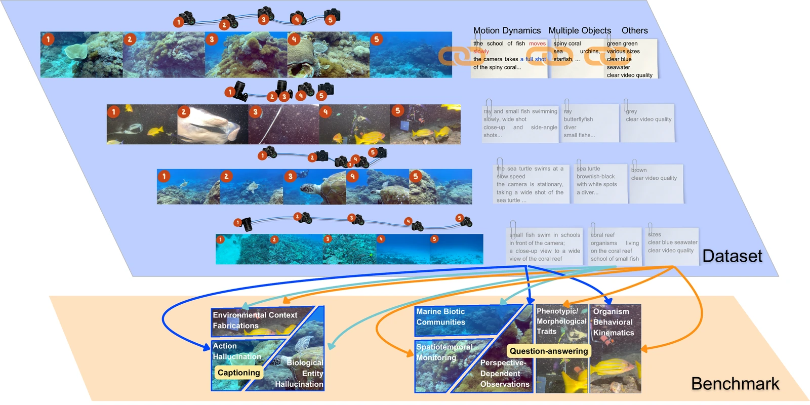
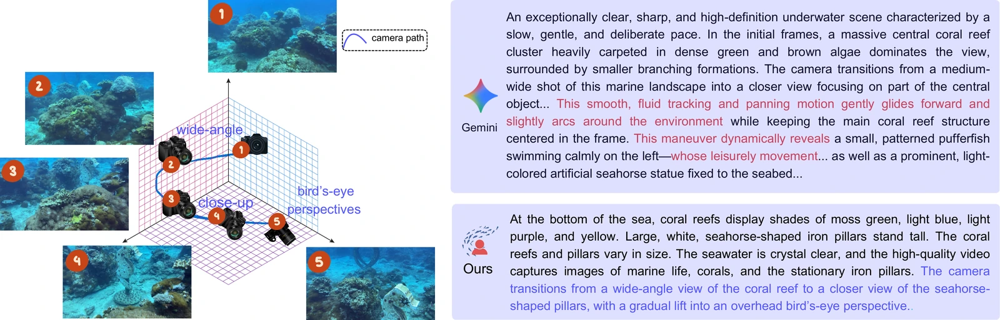
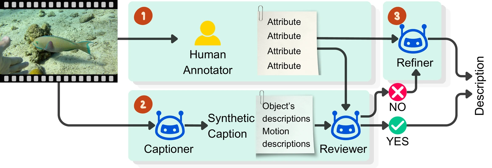
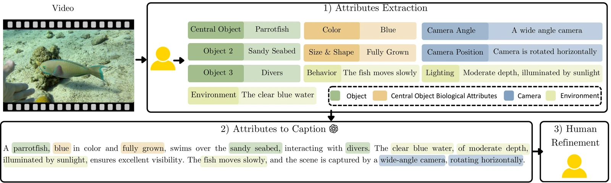
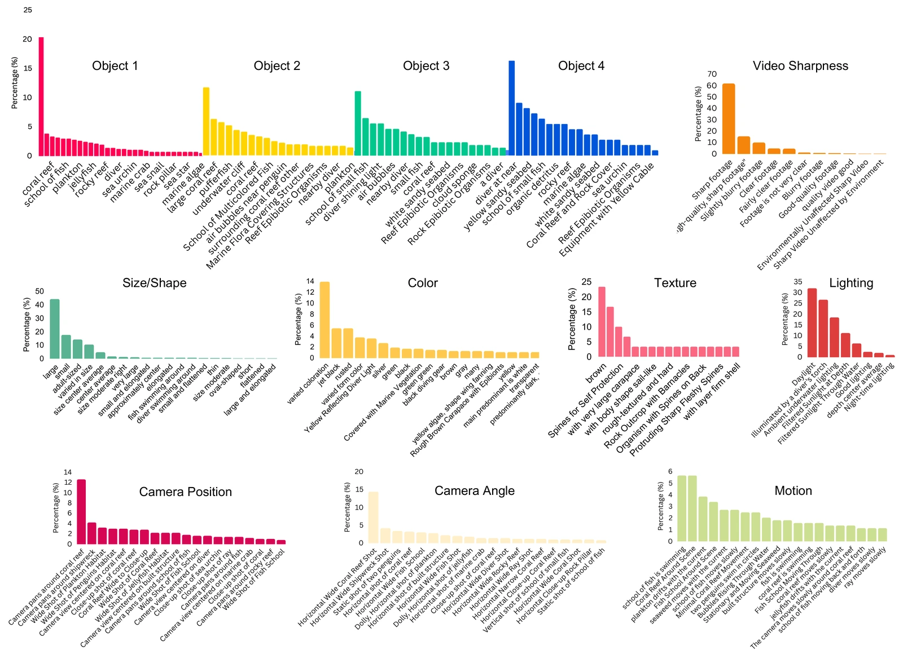
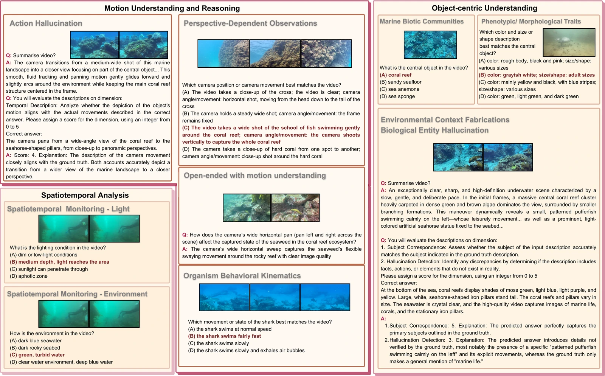
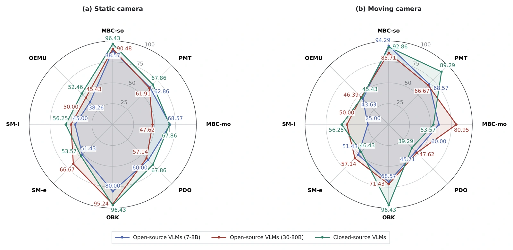

MarineLife-16K: An Attribute-Rich Video-Text Dataset for Motion-Aware Marine Video Understanding
IEEE/CVF Winter Conference on Applications of Computer Vision (WACV), 2027
Overview
MarineLife-16K is an attribute-rich marine video–text dataset with 2,000 video–text pairs and 16K question–answer pairs. Its annotations cover subjects, appearance, behavior, environmental conditions and camera viewpoint.
The benchmark evaluates video question answering and captioning, with a focus on distinguishing camera movement from object motion in underwater scenes.
Annotation Highlights

Video, attribute and motion annotations support video QA and captioning.
Illustration of Motion Hallucination

Gemini description and dataset reference for the same video, with differences in camera and object motion highlighted.
Data Examples
Reef fish
Big Island · January 2023
Five illustrative clips, not the full benchmark.
A Three-Stage, Human-in-the-Loop Caption Engine
- 01
Annotate
Human annotators record objects, appearance, activity, scene conditions and camera viewpoint.
- 02
Caption & review
A captioner composes descriptions; a reviewer checks them against the annotated attributes.
- 03
Refine
Descriptions that need revision pass through refinement before becoming dataset captions.

Attribute-to-Caption Example

Annotation Statistics

Evaluation Dimensions and Examples

Benchmark Results
Open- and closed-source VLMs compared across eight evaluation dimensions under static- and moving-camera settings.

See the paper for metric definitions, scoring scales and evaluation subsets.
Cite MarineLife-16K
@inproceedings{truong2027marinelife16k,
title={MarineLife-16K: An Attribute-Rich Video-Text Dataset for Motion-Aware Marine Video Understanding},
author={Truong, Quang-Trung and Nguyen, Thanh-Nghia andVo, Phu-Phong and Kim, Jaeyeon and Chen, Cheng and Zhang, Jie and
Hua, Binh-Son and Nguyen, Duc Thanh and Tsang, Ivor and Yeung, Sai-Kit},
booktitle={IEEE/CVF Winter Conference on Applications of Computer Vision (WACV)},
year={2027}}